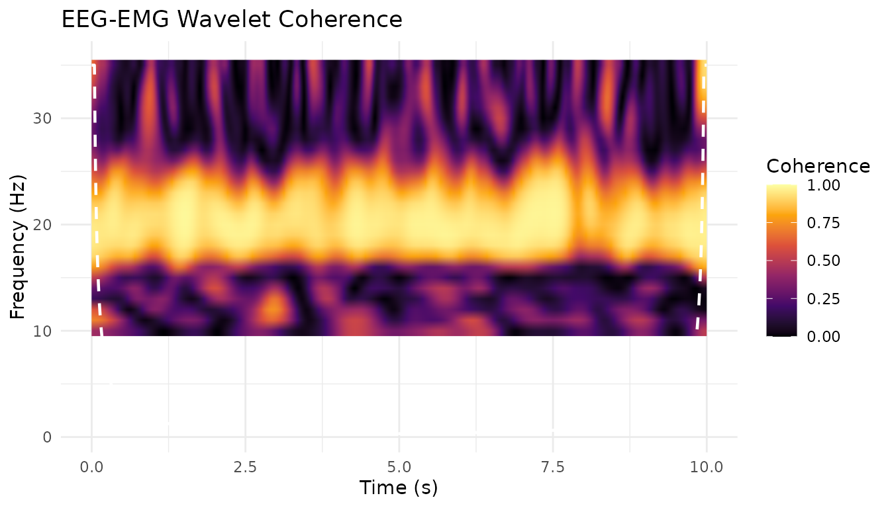
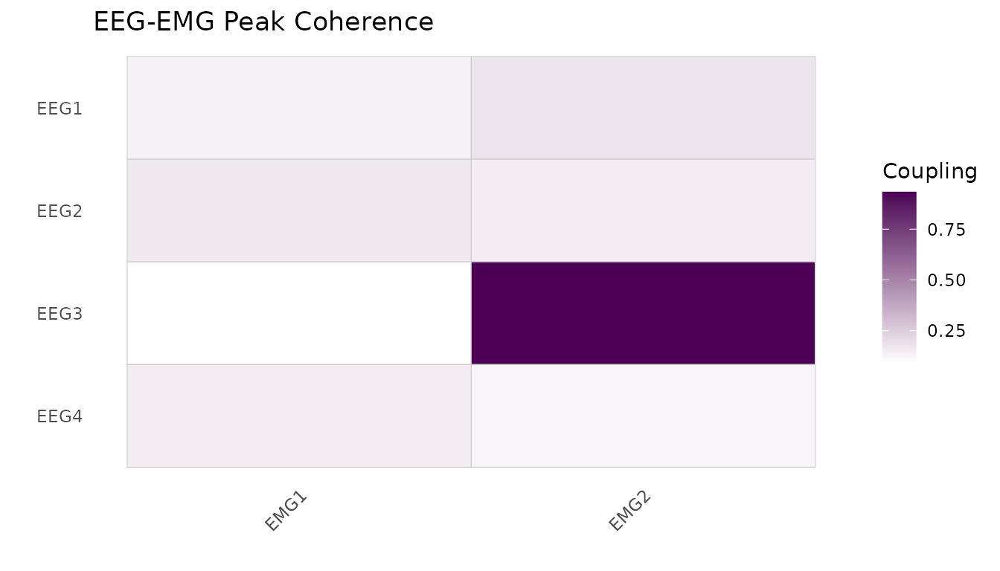

Overview
PhysioCrossModal provides tools for analysing coupling, connectivity, and synchrony between physiological signals of different modalities. While single-modality analysis (e.g., EEG coherence between channels) is handled by PhysioAnalysis, PhysioCrossModal focuses on the relationship between distinct signal types – for example, quantifying how cortical EEG activity drives peripheral EMG during a motor task.
The package introduces:
-
MultiPhysioExperiment– a container that holds multiplePhysioExperimentobjects recorded simultaneously at potentially different sampling rates. - Spectral coupling – magnitude-squared coherence and cross-spectral density between modalities.
- Phase synchrony – Phase Locking Value (PLV), Phase Lag Index (PLI), and weighted PLI (wPLI).
- Directed coupling – time-domain and spectral Granger causality.
- Time-domain coupling – cross-correlation and sliding-window cross-correlation.
- A unified
couplingAnalysis()wrapper that dispatches to any of the above methods with a single function call.
This vignette walks through a cortico-muscular coherence (CMC) analysis as a worked example – a common paradigm in motor neuroscience where the goal is to quantify the functional coupling between cortical EEG and peripheral EMG during sustained isometric contraction.
References: Mima & Hallett (1999), Halliday et al. (1995).
Creating simulated EEG and EMG data
In a real experiment you would import data with
PhysioCore::readEDF() or similar I/O functions. Here we
generate synthetic signals with a known 20 Hz coupling (the beta-band
CMC peak typically observed during steady-force tasks).
Note: In real CMC research, coherence values are typically in the range 0.1–0.4. We use a higher coupling strength here for pedagogical clarity. Additionally, real EMG data should be rectified (full-wave rectification) before CMC analysis.
library(PhysioCrossModal)
#> Loading required package: PhysioCore
#> Warning: replacing previous import 'S4Arrays::makeNindexFromArrayViewport' by
#> 'DelayedArray::makeNindexFromArrayViewport' when loading 'SummarizedExperiment'
set.seed(42)
# --- Parameters ---
sr_eeg <- 500 # EEG sampling rate (Hz)
sr_emg <- 1000 # EMG sampling rate (Hz)
n_sec <- 10 # recording duration (seconds)
cmc_freq <- 20 # coupling frequency (Hz)
cmc_strength <- 0.7 # coupling strength (0 = none, 1 = perfect)
n_eeg <- as.integer(sr_eeg * n_sec)
n_emg <- as.integer(sr_emg * n_sec)
t_eeg <- seq(0, by = 1 / sr_eeg, length.out = n_eeg)
t_emg <- seq(0, by = 1 / sr_emg, length.out = n_emg)
# Shared 20 Hz oscillation (the "cortical drive")
driver_eeg <- sin(2 * pi * cmc_freq * t_eeg)
driver_emg <- sin(2 * pi * cmc_freq * t_emg)
# Four EEG channels -- only channel 1 carries the CMC signal
n_eeg_ch <- 4
eeg_data <- matrix(rnorm(n_eeg * n_eeg_ch), nrow = n_eeg, ncol = n_eeg_ch)
eeg_data[, 1] <- eeg_data[, 1] + cmc_strength * driver_eeg
# Two EMG channels -- only channel 1 carries the CMC signal
n_emg_ch <- 2
emg_data <- matrix(rnorm(n_emg * n_emg_ch) * 0.5, nrow = n_emg, ncol = n_emg_ch)
emg_data[, 1] <- emg_data[, 1] + cmc_strength * driver_emgBuilding PhysioExperiment objects
Each modality is stored as a standard PhysioExperiment
from the PhysioCore package. The key fields are the signal matrix (time
x channels), channel metadata in colData, and the sampling
rate.
pe_eeg <- PhysioExperiment(
assays = list(raw = eeg_data),
colData = S4Vectors::DataFrame(
label = paste0("EEG", seq_len(n_eeg_ch)),
type = rep("EEG", n_eeg_ch)
),
samplingRate = sr_eeg
)
pe_emg <- PhysioExperiment(
assays = list(raw = emg_data),
colData = S4Vectors::DataFrame(
label = paste0("EMG", seq_len(n_emg_ch)),
type = rep("EMG", n_emg_ch)
),
samplingRate = sr_emg
)Creating a MultiPhysioExperiment
The MultiPhysioExperiment container bundles the two
modalities together with temporal alignment metadata. Note that the EEG
and EMG have different sampling rates (500 vs 1000 Hz) – the container
preserves both natively.
mpe <- MultiPhysioExperiment(EEG = pe_eeg, EMG = pe_emg)
mpe
#> class: MultiPhysioExperiment
#> modalities(2): EEG, EMG
#> samplingRates: EEG=500Hz, EMG=1000Hz
#> EEG: 5000 timepoints x 4 channels
#> EMG: 10000 timepoints x 2 channelsYou can query the container:
modalities(mpe) # "EEG" "EMG"
#> [1] "EEG" "EMG"
samplingRates(mpe) # EEG=500 EMG=1000
#> EEG EMG
#> 500 1000
nModalities(mpe) # 2
#> [1] 2Spectral coherence (CMC)
The core analysis: magnitude-squared coherence between EEG channel 1 and EMG channel 1. Coherence quantifies the linear frequency-domain relationship and ranges from 0 (no coupling) to 1 (perfect coupling).
Both coherence (Welch’s method) and Granger causality assume weak stationarity. For a 10-second sustained isometric contraction this is plausible, but researchers working with dynamic tasks should verify this assumption.
coh_result <- coherence(
mpe,
modality_x = "EEG",
modality_y = "EMG",
channels_x = 1L,
channels_y = 1L,
nperseg = 256L
)
str(coh_result)
#> List of 5
#> $ coherence : num [1:129] 0.02535 0.01142 0.00946 0.00515 0.11206 ...
#> $ type : chr "magnitude"
#> $ frequencies : num [1:129] 0 1.95 3.91 5.86 7.81 ...
#> $ confidence_limit: num 0.0778
#> $ n_segments : int 38
# Find the peak coherence near 20 Hz
peak_idx <- which.max(coh_result$coherence)
cat(sprintf("Peak coherence = %.3f at %.1f Hz\n",
coh_result$coherence[peak_idx],
coh_result$frequencies[peak_idx]))
#> Peak coherence = 0.933 at 19.5 HzThe confidence_limit field provides a 95% significance
threshold based on the number of segments in the Welch estimation
(Halliday et al. 1995). Coherence values above this line are unlikely to
arise by chance.
You can restrict the output to a frequency range of interest:
Phase Locking Value (PLV)
PLV (Lachaux et al. 1999) measures the consistency of the phase difference between two signals within a specified frequency band. A PLV near 1 indicates that the two signals maintain a stable phase relationship; a PLV near 0 indicates random phase differences.
plv_result <- phaseLockingValue(
mpe,
modality_x = "EEG",
modality_y = "EMG",
freq_band = c(15, 25) # beta band around 20 Hz
)
cat(sprintf("PLV = %.3f\n", plv_result$plv))
#> PLV = 0.954Granger causality
Granger causality (Granger 1969; Geweke 1982) quantifies directed coupling – it tells you whether the past of signal X helps predict the future of signal Y, beyond what Y’s own past can predict. This is particularly relevant for CMC because cortico-muscular drive is thought to be predominantly (though not exclusively) descending (EEG drives EMG).
gc_result <- grangerCausality(
mpe,
modality_x = "EEG",
modality_y = "EMG",
order = 10L # AR model order
)
cat(sprintf("GC (EEG -> EMG) = %.4f\n", gc_result$gc_xy))
#> GC (EEG -> EMG) = 0.0181
cat(sprintf("GC (EMG -> EEG) = %.4f\n", gc_result$gc_yx))
#> GC (EMG -> EEG) = 0.0966
cat(sprintf("Net GC = %.4f\n", gc_result$net_gc))
#> Net GC = -0.0784
# Positive net_gc indicates EEG drives EMG more than the reverseNote: for Granger causality to work correctly, both signals must be
resampled to the same rate. When you pass a
MultiPhysioExperiment, the internal signal extraction
handles this automatically.
The couplingAnalysis() wrapper
If you want a uniform interface to all coupling methods, use
couplingAnalysis(). It dispatches to the appropriate
function based on the method argument:
# Coherence via wrapper
res_coh <- couplingAnalysis(
mpe,
modality_x = "EEG",
modality_y = "EMG",
method = "coherence"
)
# Cross-correlation via wrapper
res_cc <- couplingAnalysis(
mpe,
modality_x = "EEG",
modality_y = "EMG",
method = "crosscorrelation"
)
cat(sprintf("Peak cross-correlation = %.3f at lag = %d samples (%.1f ms)\n",
res_cc$peak_correlation,
res_cc$peak_lag,
res_cc$peak_lag_seconds * 1000))
#> Peak cross-correlation = -0.381 at lag = 37 samples (74.0 ms)The wrapper accepts the same x/y and
mpe arguments as the individual functions, plus
method-specific parameters via ....
Working with raw numeric vectors
All coupling functions also accept plain numeric vectors with an
explicit sr argument. This is useful for quick one-off
analyses or when your data is not yet stored in a PhysioExperiment:
set.seed(123)
sr <- 500
t <- seq(0, 10, length.out = sr * 10)
x <- sin(2 * pi * 20 * t) + 0.2 * rnorm(length(t))
y <- 0.8 * sin(2 * pi * 20 * t) + 0.2 * rnorm(length(t))
# Direct vector interface
coh <- coherence(x, y, sr = sr)
gc <- grangerCausality(x, y, sr = sr, order = 10)
cc <- crossCorrelation(x, y, sr = sr)Signal alignment utilities
When modalities have different sampling rates, you may need to resample before certain analyses. PhysioCrossModal provides helper functions:
# Resample a single PE to a target rate
pe_emg_500 <- alignToRate(pe_emg, target_rate = 500)
# Align multiple PEs to the lowest rate and bundle into an MPE
mpe_aligned <- alignSignals(EEG = pe_eeg, EMG = pe_emg,
method = "lowest_rate")
# Merge two same-rate PEs into a single PE (column-bind)
merged_pe <- mergePhysio(pe_eeg, alignToRate(pe_emg, target_rate = 500),
prefix = c("EEG_", "EMG_"))Statistical significance testing
PhysioCrossModal v0.2.0 provides two complementary approaches for assessing the statistical significance of coupling estimates: surrogate-based null-hypothesis testing and block-bootstrap confidence intervals.
Surrogate testing
surrogateTest() generates a null distribution by
randomising the phase spectrum (or circularly shifting) one signal,
thereby destroying the cross-signal relationship while preserving
autocorrelation:
surr <- surrogateTest(
mpe,
modality_x = "EEG",
modality_y = "EMG",
method = "coherence",
n_surrogates = 19,
nperseg = 256L
)
cat(sprintf("Observed = %.3f, p = %.4f, 95%% threshold = %.3f\n",
surr$statistic, surr$p_value, surr$threshold_95))
#> Observed = 0.933, p = 0.5500, 95% threshold = 0.940Bootstrap confidence intervals
bootstrapCI() uses the moving-block bootstrap
(preserving temporal autocorrelation) to construct confidence
intervals:
boot <- bootstrapCI(
mpe,
modality_x = "EEG",
modality_y = "EMG",
method = "coherence",
n_boot = 19,
ci = 0.95,
nperseg = 256L
)
cat(sprintf("95%% CI: [%.3f, %.3f]\n", boot$ci_lower, boot$ci_upper))
#> 95% CI: [0.828, 0.900]Wavelet coherence
While Welch-based coherence gives a single frequency-domain estimate
averaged over the entire recording, wavelet coherence
(waveletCoherence()) reveals time-frequency
coupling dynamics. This is particularly useful when coupling strength
varies over time (e.g. during movement onset or task transitions).
wcoh <- waveletCoherence(
mpe,
modality_x = "EEG",
modality_y = "EMG",
frequencies = seq(10, 35, by = 1),
n_cycles = 7,
smoothing_cycles = 3
)
# wcoh$coherence is a [time x frequency] matrix
# wcoh$phase contains the phase differences
# wcoh$coi contains the Cone of Influence frequencies
# Wavelet PLV is also available:
wplv <- waveletPLV(
mpe,
modality_x = "EEG",
modality_y = "EMG",
frequencies = seq(10, 35, by = 1)
)Wavelet coherence visualization
plotWaveletCoherence(wcoh, title = "EEG-EMG Wavelet Coherence")
Multi-channel coupling matrices
When you want to compute coupling across all channel pairs (e.g., to
identify which EEG electrode shows the strongest coherence with which
EMG channel), use coherenceMatrix() or the generic
couplingMatrix():
mat <- coherenceMatrix(
mpe,
modality_x = "EEG",
modality_y = "EMG",
nperseg = 256L
)
# mat$matrix is a [n_eeg_channels x n_emg_channels] matrix
# Visualise as a heatmap
if (requireNamespace("ggplot2", quietly = TRUE)) {
plotCouplingMatrix(mat$matrix, title = "EEG-EMG Peak Coherence")
}
The generic couplingMatrix() works with any coupling
method:
cc_mat <- couplingMatrix(
mpe,
modality_x = "EEG",
modality_y = "EMG",
method = "crosscorrelation"
)Summary
| Method | Function | What it measures |
|---|---|---|
| Spectral coherence | coherence() |
Linear frequency-domain coupling [0, 1] |
| Cross-spectral density | crossSpectrum() |
Magnitude and phase of frequency coupling |
| Phase Locking Value | phaseLockingValue() |
Phase consistency in a frequency band [0, 1] |
| Phase Lag Index | phaseLagIndex() |
Phase coupling robust to volume conduction [0, 1] |
| Weighted PLI | weightedPLI() |
Noise-weighted phase coupling [0, 1] |
| Granger causality | grangerCausality() |
Directed (causal) coupling |
| Cross-correlation | crossCorrelation() |
Time-domain coupling with lag estimation |
| Sliding cross-correlation | slidingCrossCorrelation() |
Time-varying coupling dynamics |
| Wavelet coherence | waveletCoherence() |
Time-frequency coherence via Morlet wavelets |
| Wavelet PLV | waveletPLV() |
Time-frequency phase locking |
| Surrogate test | surrogateTest() |
Null-hypothesis significance testing |
| Bootstrap CI | bootstrapCI() |
Confidence intervals via block bootstrap |
| Multitaper coherence | multitaperCoherence() |
Coherence via DPSS tapers (low variance) |
| Coherence matrix | coherenceMatrix() |
Multi-channel coherence across all pairs |
| Coupling matrix | couplingMatrix() |
Multi-channel coupling (any method) |
| Matrix significance | surrogateMatrixTest() |
Surrogate test with FDR correction |
| Wavelet plot | plotWaveletCoherence() |
Time-frequency heatmap with COI |
| Unified wrapper | couplingAnalysis() |
Dispatches to any of the above |
For further details on each function, see the package reference
manual (?coherence, ?phaseLockingValue,
etc.).